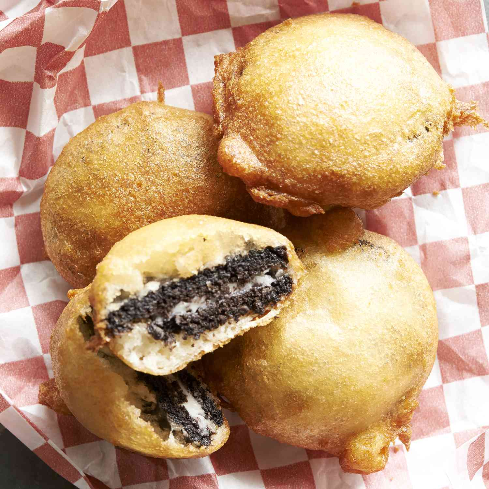

Deep Fried Oreo Recipe

Description
Deep-fried Oreos are a carnival favorite where I grew up. Oreos get dipped
into pancake batter and fried — yummy! You can do this with or without a
deep fryer.
Ingredients
- 2 quarts of vegetable oil for frying
- 1 cup milk
- 1 large egg
- 2 teaspoons vegetable oil
- 1 cup pancake mix
-
1 (18 ounce) package cream-filled chocolate
sandwich cookies (such as Oreo)
Steps
-
Heat oil in a deep fryer or large saucepan to 375 degrees F (190 degrees
C).
-
Whisk milk, egg, and 2 teaspoons of vegetable oil in a large bowl until
smooth. Stir in the pancake mix until no dry lumps remain.
-
Dip cookies into batter, one at a time, and carefully place into hot
oil. Fry in batches, 4 or 5 at a time, until cookies are golden brown,
about 2 minutes. Drain on a paper towel-lined plate before serving.
Return to Home Page